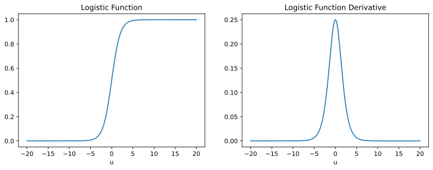
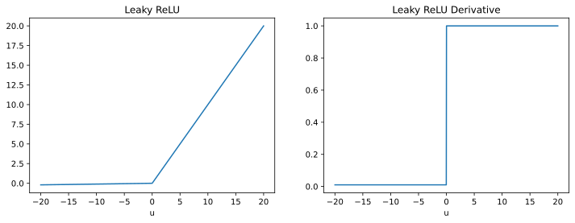

Backpropagation for Multilayer Perceptrons
Chris Tralie
Click here to view the companion module for these notes
Table of Contents
In homework 5, you implemented gradient descent to perform logistic regression. This can be thought of as learning a neural network with a single neuron ("the perceptron"), but the best we can do in this case is to learn a separating hyperplane. As we discussed in class, though, when we put a bunch of neurons together, we can learn arbitrarily complicated functions. So now we're going to take gradient descent to the next level to learn how to solve arbitrary fully connected feed forward networks, also known as multilayer perceptrons (MLPs), by using an algorithm called backpropagation as a subroutine. Actually, as you will see, this is just a fancy name for the chain rule of calculus, specialized to neural networks.
At this point, we could just turn to one of the myriad libraries out there like pytorch to optimize neural network models for us, but I want you to see if we use the right definitions, then creating a vanilla neural network solver really isn't that much code in numpy. It's also important that know how everything works under the hood when you run pytorch (see this Medium article by Andrej Karpathy on why it's important to understand these details). You will implement the algorithms I describe below in homework 6.
Leaky ReLU
Before I dive into the backpropagation algorithm, I first want to define a new type of activation function that will come in handy.
One of the issues with the logistic function is that it suffers from the problem of "vanishing gradients"; if the input to the logistic function is far from zero, then it is nearly flat, as shown below:
This makes it slow to learn, as the step sizes for internal weights in the network in these regimes will be very small. To address this, there's another activation function that's very popular known as the Leaky Rectified Linear Unit (Leaky ReLU), which can be defined as the following piecewise function
\[ f(u) = \left\{ \begin{array}{cc} u & u > 0 \\ 0.01 u & u \leq 0 \end{array} \right\} \]
The derivative of this function is then
\[ f'(u) = \left\{ \begin{array}{cc} 1 & u > 0 \\ 0.01 & u \leq 0 \end{array} \right\} \]
These functions are plotted below
We've lost continuity of the derivative at the origin, but otherwise, it's great numerically and it never saturates, and you'll find that learning can happen much faster.
Forward Pass via Matrix Operations
A multilayer perceptron is a sequence of layers of perceptrons. The output of each perceptron in each layer is fed as an input to every perceptron the next layer of perceptrons. This means that we need to define a weight between every pair of perceptrons between two adjacent layers. The image below shows all such weights between two layers with 3 and 4 perceptrons, respectively

At the end of the day, though, an MLP is just a function, and we want to know what it should output given a particular input x fed into the first layer. The key trick to make this easier for multilayer perceptrons is to recast their operation as a sequence of matrix multiplications and element-wise applications of activation functions[1]. Let's take the following piece of a network below, for instance, where the blue nodes show inputs to the orange neurons:
[1] In what follows, I'll be mostly following notational conventions from Ch. 6.5 of Deep Learning by Goodfellow, Bengio, and Courville
Let's also assume that the ith orange node has a bias bi. Assuming that the activation function for the orange neurons is a function f(u), then we could write the output of the ith neuron as
\[ a[i] = w_{0i} x_0 + w_{1i} x_1 + w_{2i} x_2 + w_{3i} x_3 + b_i \] \[ h[i] = f(a[i]) \]
In other words, the vector a is a dot product of the weights and the input vector x. But there is a much more elegant way to write transformations for all inputs if we reformulate it as a matrix expression, and this will be much easier to implement in code. In particular, define the following matrices
\[ x = \left[ \begin{array}{c} x_0 \\ x_1 \\ x_2 \\ x_3 \end{array} \right], W = \left[ \begin{array}{cccc}w_{00}&w_{10}&w_{20}&w_{30}\\w_{01}&w_{11}&w_{21}&w_{31}\\w_{02}&w_{12}&w_{22}&w_{32}\\w_{03}&w_{13}&w_{23}&w_{33}\\w_{04}&w_{14}&w_{24}&w_{34}\end{array} \right], b = \left[ \begin{array}{c} b_0 \\ b_1 \\ b_2 \\ b_3 \\ b_4 \end{array} \right] \]
Then the output of a layer in the network can be defined in two stages
\[a = Wx + b \text{, which is a linear operation }\] \[ h = f(a) \text{, which is a nonlinear operation applied element-wise to } a\]
In general, the parameters to map from the output of a layer with N neurons to the input of a layer with M neurons can be described by an M x N weight matrix W and an Mx1 bias column vector b. To propagate information through the whole network, we continually apply this sequence of linear and nonlinear operators in matrix form. We just have to store the matrix W, the vector b, and the nonlinear function f that we're using at each layer. And that's it!
In sum, below is pseudocode that describes how to do a forward pass to transform the input from each layer to the next through the entire network
Algorithm 1: Forward Propagation Through A Fully Connected Feedforward Neural Network
def forward(x)
- Let L be the number of layers
- Let h0 = x
-
for k = 1, 2, ..., L
- Let ak = Wk hk-1 + bk // Linear step. The input to this layer, hk-1, is the output of the last layer
- Let hk = fk(ak) // Nonlinear step
- yest = hL // The output of the last layer is the output of our network
Backward Pass via Matrix Operations
Click here to view a derivation in the companion module for these notes, which explains how I got the equations in the pseudocode below
We're now ready to express the equations to compute the gradient over all parameters in the network; in other words, we will now figure out the effect of our parameters on the network downstream, so that we know how to change the parameters to improve classification. This will again boil down to some matrix equations that should be fairly painless to implement in code. Though a full derivation of these equations is beyond the scope of this writeup, I will give some intuition by looking at the at a simple network with 3 neurons, each with one input and one output (so that we can avoid doing matrix derivatives for the moment). In particular, let's consider the following function:
\[ g(x) = f_3(w_3 f_2(w_2 f_1(w_1x + b_1) + b_2) + b_3) \]
In order to do updates, we need derivatives with respect to our weights w1, w2, w3 and our biases b1, b2, b3. Let's use the notation we established in the forward pass to define the following variables
- \[ a_1 = w_1x + b_1 \]
- \[ h_1 = f_1(a_1) \]
- \[ a_2 = w_2 h_1 + b_2 \]
- \[ h_2 = f_2(a_2) \]
- \[ a_3 = w_3 h_2 + b_3 \]
- \[ g(x) = f_3(a_3) \]
Then we can compute the following derivatives from the outside of the expression inwards, using the chain rule (recall that a partial derivative holds all of the variables fixed as constants except for the one we're taking the derivative with respect to)
- \[ \frac{\partial g}{\partial w_3} = f_3'(a_3) \times h_2 \]
- \[ \frac{\partial g}{\partial b_3} = f_3'(a_3) \]
- \[ \frac{\partial g}{\partial w_2} = f_3'(a_3) \times w_3 \times f_2'(a_2) \times h_1 \]
- \[ \frac{\partial g}{\partial b_2} = f_3'(a_3) \times w_3 \times f_2'(a_2) \]
- \[ \frac{\partial g}{\partial w_1} = f_3'(a_3) \times w_3 \times f_2'(a_2) \times w_2 \times f_1'(a_1) \times x \]
- \[ \frac{\partial g}{\partial b_1} = f_3'(a_3) \times w_3 \times f_2'(a_2) \times w_2 \times f_1'(a_1) \]
A pattern is starting to emerge here. In particular, notice how equation 2 is contained in part of equations 3 and 4 and how equation 4 is contained in part of equations 5 and 6. So this means we'll be able to define some recursive substitutions from layer to layer as we go along, just like we remembered outputs of layers from one to the next as we went along during the forward pass.
From the point of view of the network, the first derivatives we're able to compute are with respect to parameters at the end of the network. We can then use these expressions to substitute in for parameters in layers that precede them. We can avoid recomputing things by remembering some of the products we computed along the way. This leads to an efficient dynamic programming algorithm known as backpropagation. It earns its name since, by contrast to evaluating moving forward layer to layer when evaluating an input, we actually start with the output of the network and compute the gradients backwards layer by layer.
There's one more thing I omitted, which is that we also define a loss function over the output, and we're really looking for the gradient with respect to the loss function. But the above gives a flavor for the patterns that emerge.
Below is the pseudocode for the matrix form of backpropagation for general feedforward networks of any shape. It may look daunting at first, but each bullet point should be a single line of code since we set up things in such an organized way with matrices.
If you look closely, you can match these steps up with the simple 1D example I gave above and see where the substitutions happen from one layer to the next. In a nutshell, what I've done is rearrange some of the results from the derivations I did in the module to be more convenient in code.
Algorithm 2: Backpropagation Through A Fully Connected Feedforward Neural Network
NOTE: Below I refer to derivatives f' as f_deriv so that the ' doesn't get lost in the shuffle
def backprop(x, y), where x is input and y is ground truth label
After this iterates, the lists Wderivs and bderivs will be populated with matrices that hold the derivatives of all weights and biases, respectively
- Let L be the number of layers
- Call forward(x) to compute a's and h's at each layer
- Let yest = hL
- Let g = est_lossderiv(yest, y) // This is the derivative of the loss function with respect to the inputs of the last layer
-
for k = L, L-1, ..., 1
-
// Step 1: Propagate gradient backwards through the nonlinear output fk of this layer
if k < L- g = g*f_derivk(ak) // This is element-wise multiplication of g and f_derivk(ak), which are parallel arrays
-
// Step 2: Compute the gradients of the weights and biases at this layer
- Let b_derivsk = g // We now have the gradient for biases in this level
-
Let W_derivsk = g hk-1T // This is a matrix multiplication. Treating hk-1 and g as column matrices, this performs their outer product to get the gradient for each weight at this layer
// As a sanity dimension check, note that hk-1 is the output of the layer before, which is the input to this layer, and g is the gradient of the output of this layer. So if hk-1 is an N x 1 matrix and g is an M x 1 matrix, then g hk-1T will be an M x N matrix, which matches the dimensions of Wk. So each element of g hk-1T will hold the derivative of Wk's corresponding weight.
NOTE: When coding this in numpy, you can take advantage of
np.outerNOTE Also: When we're at the first layer (k=1), then hk-1 is actually x, the input to the whole network.
-
// Step 3: Propagate the gradient backwards through the linear part of this layer to be used at the next layer back
- g = WkT g // This is a matrix multiplication
-
// Step 1: Propagate gradient backwards through the nonlinear output fk of this layer